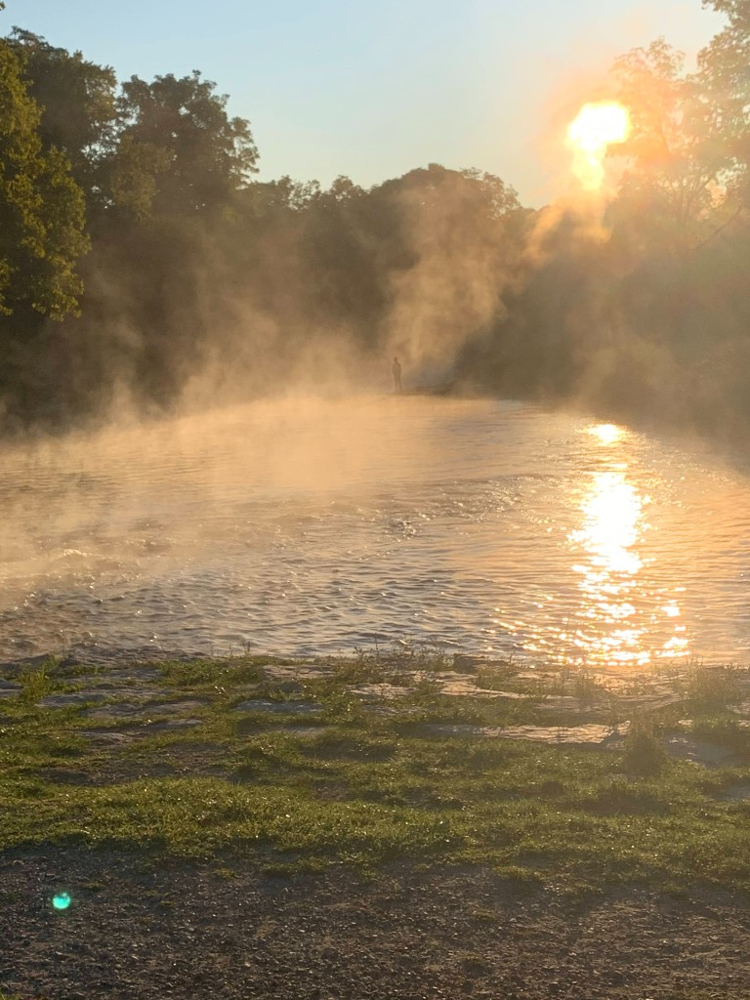
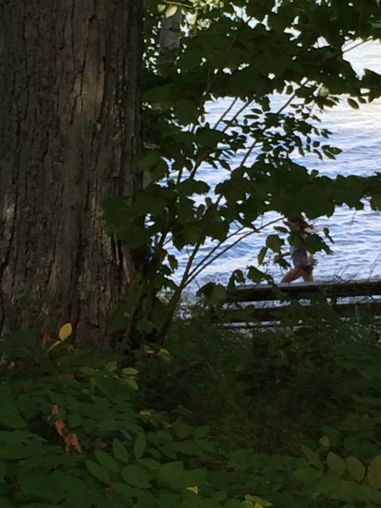
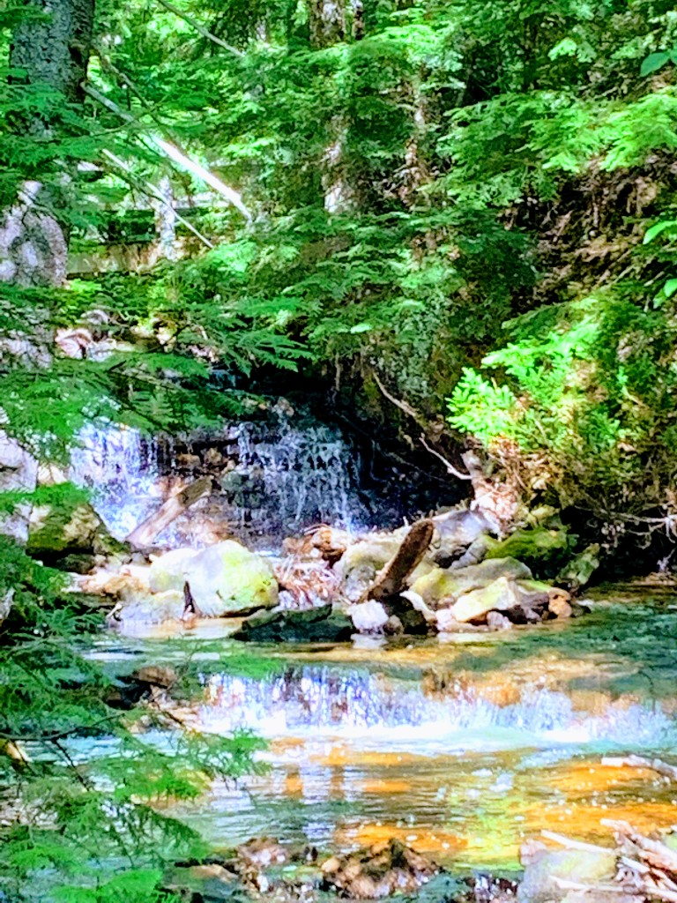
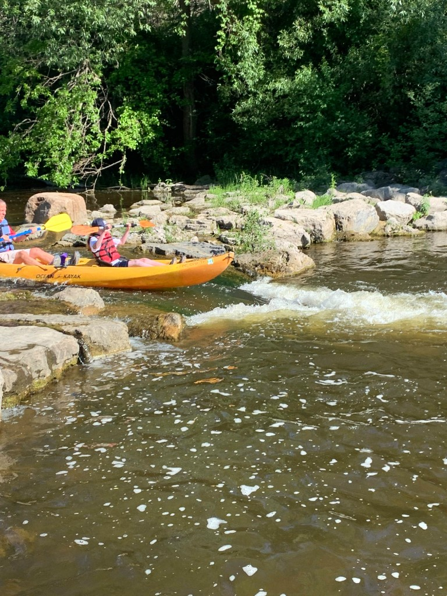
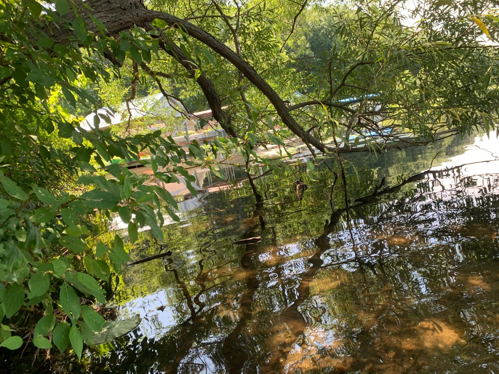
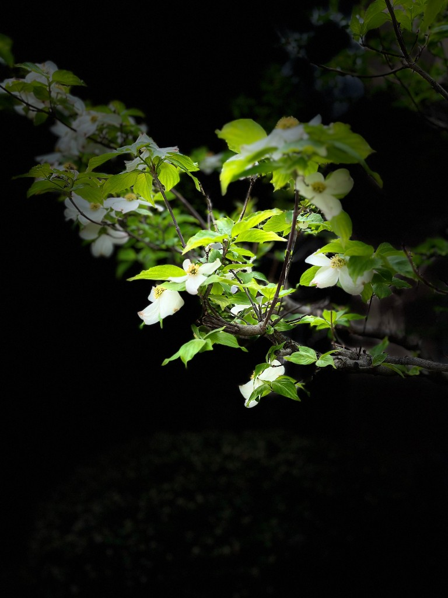
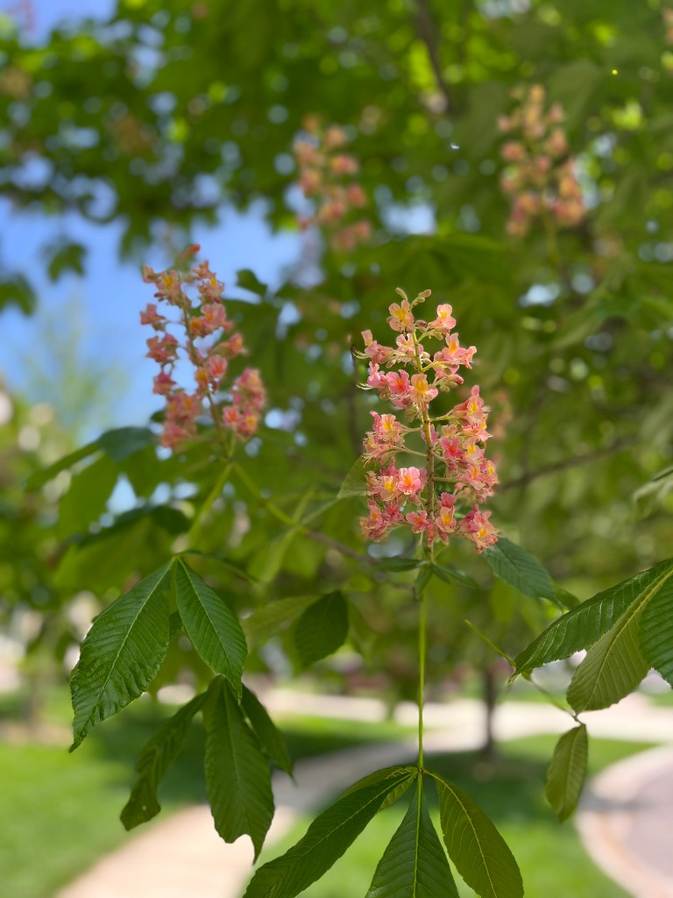
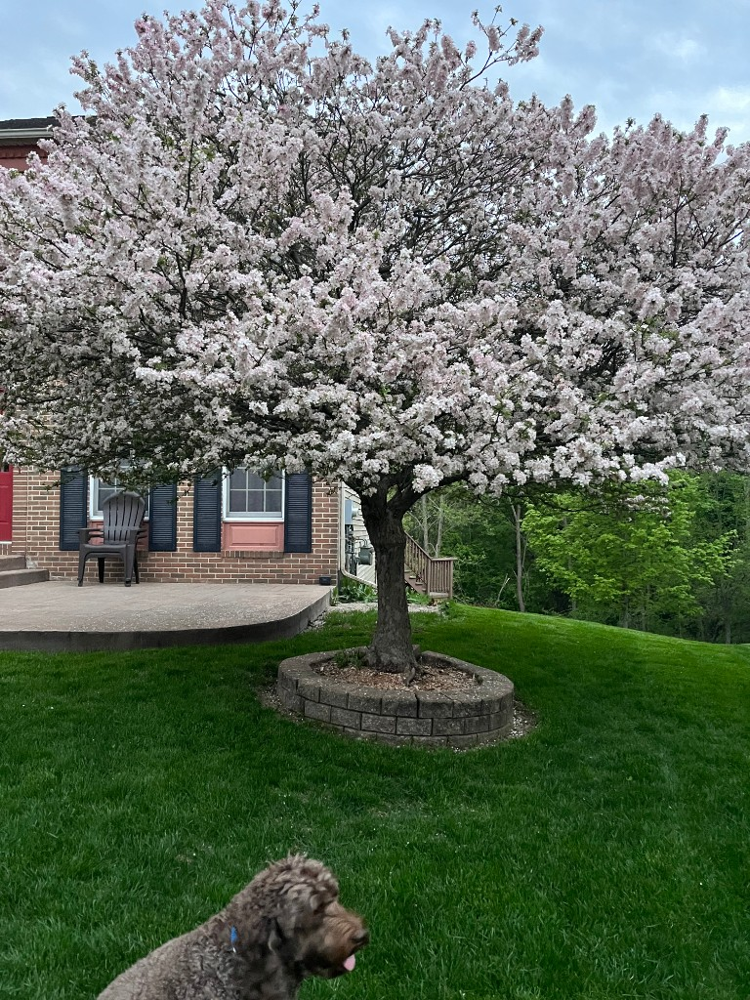
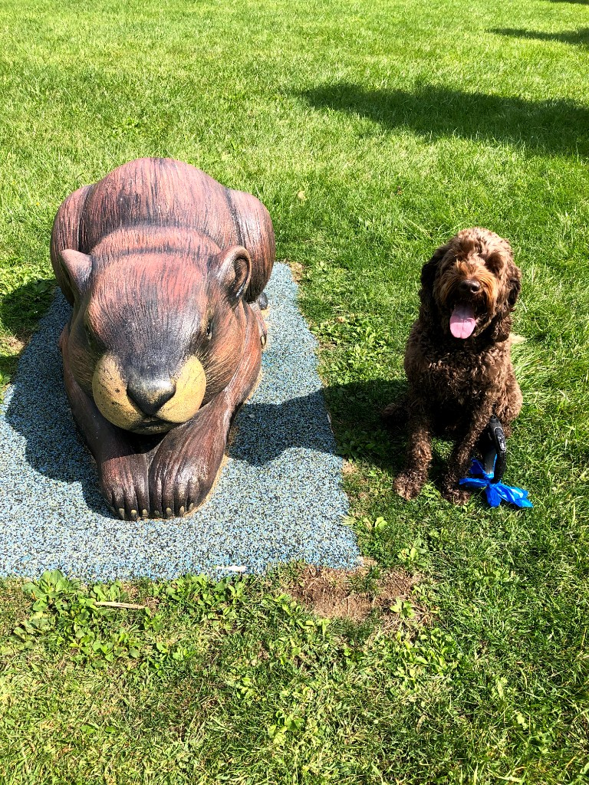

This gallery collects quiet moments from rivers, trails, and backyards: mist on the water at sunrise, a hidden waterfall in the woods, kayaks threading through rock, and trees in bloom.
The photos move from water to flowers and then to everyday park life. Together they show how light, color, and a little movement can turn an ordinary outing into something worth keeping.








